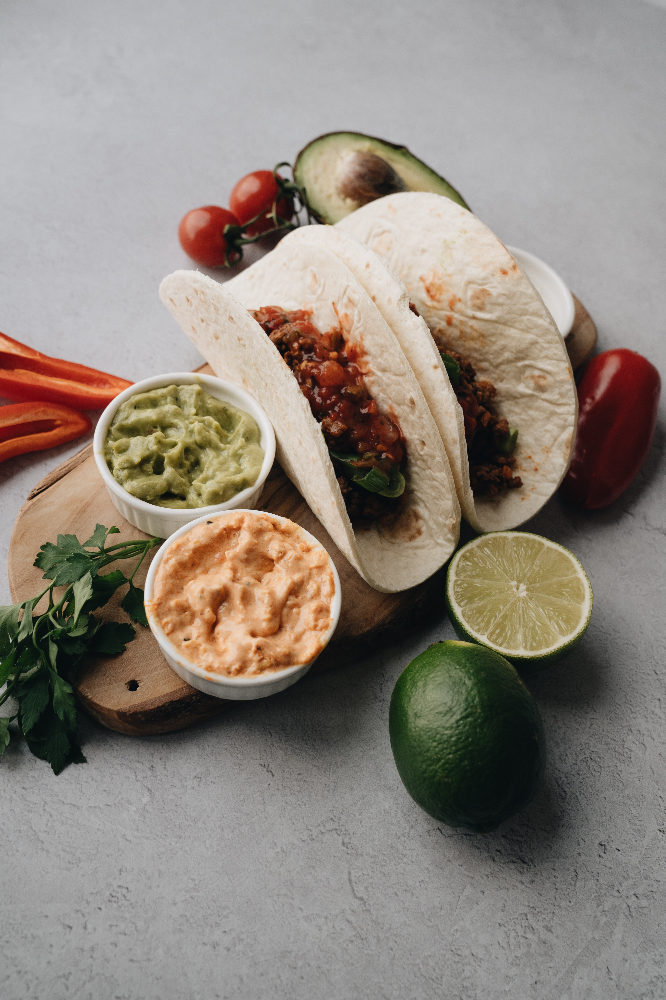

Welcome to Healthy Recipes
We provide a wide range of healthy and delicious recipes to help you maintain a balanced diet and improve your health.
Work Meals
- Grilled Cheese Sandwich
- Quesadilla
Ingredients: 2 slices bread 1 tablespoon butter, softened 1 slice cheese Instructions: Spread butter on one side of each slice of bread. Place one slice of bread, butter-side down, in a pan over medium heat. Top with the cheese and the other slice of bread, butter-side up. Cook for 2-3 minutes per side, or until the bread is golden brown and the cheese is melted. Cut in half and serve.

Ingredients: 1 tortilla 1/2 cup shredded cheese Your choice of fillings, such as: Cooked chicken or beef Beans Salsa Pico de gallo Avocado Lettuce Tomato Instructions: Heat a tortilla in a pan over medium heat. Sprinkle with cheese and your choice of fillings. Fold the tortilla in half and cook for 2-3 minutes per side, or until the tortilla is golden brown and the cheese is melted. Cut in half and serve.
These are just a few ideas for healthy work meals. There are many other possibilities, so get creative and find what you like best!